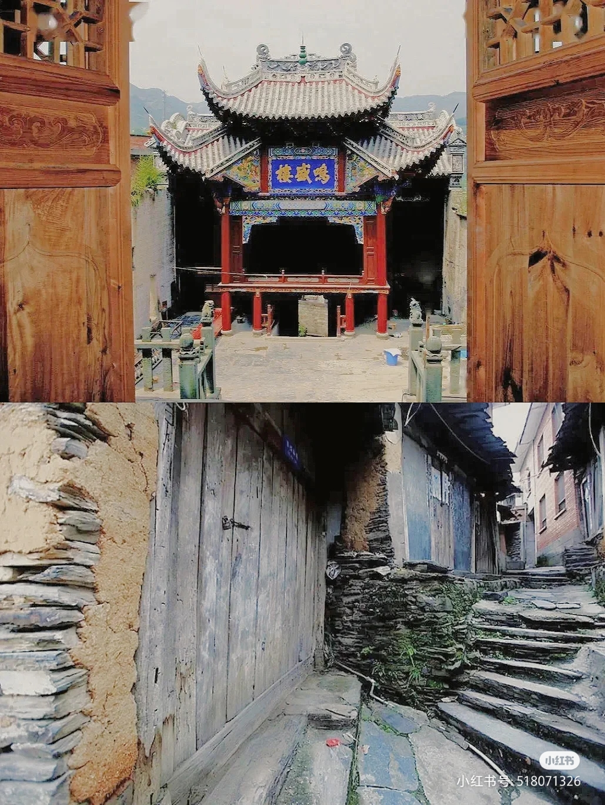
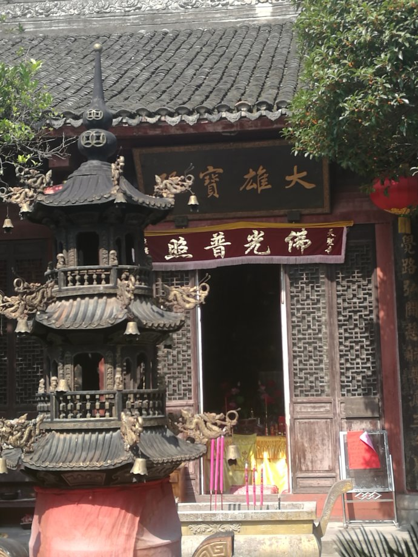
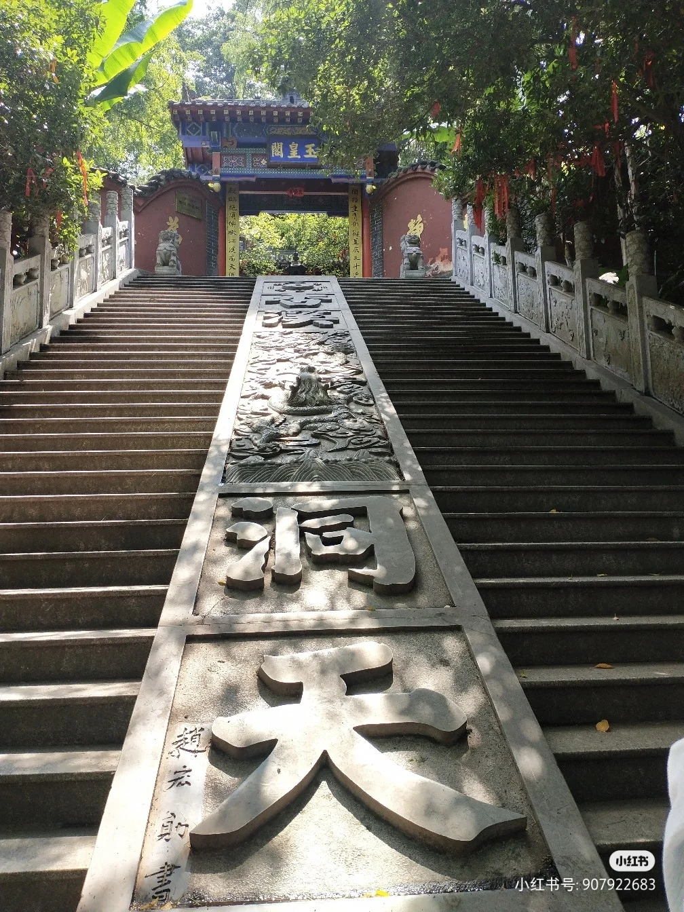
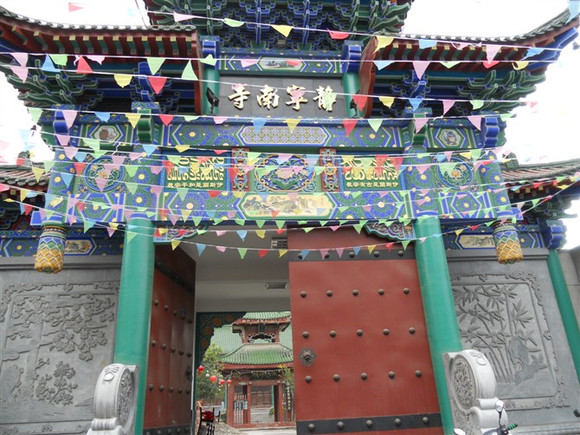

安康--文化底蕴
一，历史上的安康
安康市在石器时代已有人类活动。
夏代，安康属于梁州；商、周时期，为庸国的封地，称为“上庸”；春秋战国时期，为秦、楚、巴反复争夺之地。秦时，在此置汉中郡西城县，郡治西城。汉沿袭秦制，除西城县外，在此设长阳、长利、洵阳、钖县4县。东汉建武元年（25年），将汉中郡治迁至南郑县；建安二十一年（216年），曹魏攻占汉中，分郡之东（即今安康地区）为西城郡。曹魏、西晋时期设魏兴郡，隶属荆州，辖7县。
西晋太康元年（280年），为安置巴山一带流民，取“万年丰乐，安宁康泰”之意，得名“安康”改安阳县为安康县。南北朝时期，安康先属南朝，后属北朝，州、郡、县改易升降错杂。隋复设西城郡，属梁州，辖6县；唐，设金州汉阴郡，属山南西道，下属县与隋基本相同。
宋，设金州安康郡，辖6县；元降金州为散州，属兴元路，下辖洵阳、平利、石泉3个巡检司和汉阴县；
明代前期，设金州，下设汉阴、平利、洵阳、白河、紫阳、石泉6县，万历十一年（1583年），洪水淹没州城，遂于城南赵台山下筑新城，改金州为兴安州，原改属各县复归统辖/
清初，仍设兴安州，顺治四年（1647年），州府迁回老城，乾隆四十七年（1782年），改设兴安府，下设安康、平利、洵阳、白河、紫阳、石泉6县。
中华民国（1911～1949）初年，行政建置于地方实行省、道、县三级。从1912年起，全国废除府、州、厅的名称，一律称县，县隶属于省。1913年，复设汉阴县，新设岚皋县、宁陕县，因每省辖县过多，同年又在省下分设若干道，1914年安康地区各县属陕西省汉中道。 [53] 1922年，分平利县南部置镇坪县（治钟宝）。1933年，废道，以省辖县，10县隶属于陕西省。1935年，为行政方便，陕西省又在原兴安府范围内设第五行政督察专员公署，简称专署。专署驻安康县城东大街，下辖10县：安康、洵阳、白河、平利、汉阴、石泉、紫阳、岚皋、镇坪、宁陕县。至此，安康地区的格局形成。
二，信教文化
安康市佛教、道教、伊斯兰教、天主教、基督教五教俱全，信教群众近10万人，是全省宗教工作重点地区之一。史料记载，唐代传入佛教，宋代盛行道教，元代传入伊斯兰教，清朝光绪年间传入天主教、基督教。
- 双溪寺天圣寺
佛教南北朝时期传入安康，主要的佛教寺院有：万春寺、双溪寺、天圣寺、新罗寺、白云寺、龙兴寺、金堂寺、普渡庵等；安康佛教文化在中国佛教发展史上占有重要的地位，始建于初唐的安康佛教四大丛林新罗寺、万春寺、天圣寺、双溪寺在佛教历史上有着重要的地位，是陕南佛教禅宗著名的寺院。
- 香溪洞
安康是中国道教主要发祥地之一。现存的主要道场有：擂鼓台的真武殿、安康城的东药王殿、西药王殿、香溪洞的玉皇殿等。
- 清真古寺静宁南寺
- 清真西寺
 兴文清真寺
兴文清真寺 伊斯兰教在元朝初期与回族穆斯林迁居安康同步传入安康，在穆斯林群众聚居区有元、明、清建筑风格清真寺十多座，主要有：安康城内清真寺、静宁南寺、清真北寺、清真东寺、清真西寺、清真中寺、清真兴文寺、旬阳蜀河清真寺等。
- 天主教堂
天主教于清光绪十六年传入安康，安康城内较有名的教堂是安康金银巷的天主教堂。
- 基督教
基督教于光绪二十四年传入安康，主要有安康城区西关的福音堂。